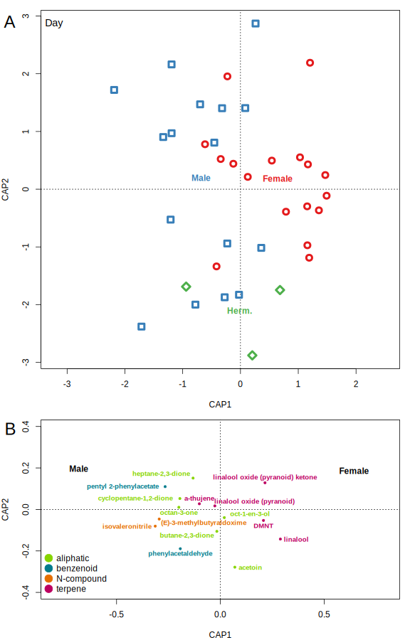
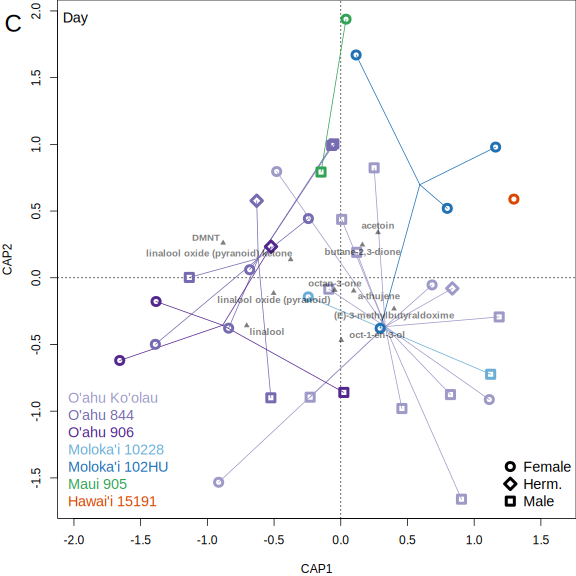

Appendix S3: Day/night differences
if(params$year == 2019) {
(cap.glob <- capscale(decostand(fvol.glob, "hellinger") ~ Time+Sex, data=svglob, distance="bray", metaMDSdist = F))
layout(matrix(c(1,2), 2, 1), heights=c(8,4.5))
par(mar=c(5,4,0,0))
plot(cap.glob, type="n")
mtext("A",side=2, line=2.5,padj=-13, cex=2, las=2)
legend("topright", c("Female","Herm","Male"), cex =1.2, inset=c(0.01,0), bty="n", adj=c(0.5,2), text.col=brewer.pal(3, "Set1")[c(1,3,2)])
legend("topright", title="Day", c("","",""), cex =1.2, pch = c(1,5,0), pt.cex=c(1.5,1.5,1.5), inset=c(0.15,0), bty="n", col=brewer.pal(3, "Set1")[c(1,3,2)], pt.lwd=4, adj=c(0.5,0.5))
legend("topright", c("","",""), title="Night", cex =1.2, pch = c(16,18,15), pt.cex=c(1.5,2,1.5), inset=c(0,0), bty="n", col=brewer.pal(3, "Set1")[c(1,3,2)], pt.lwd=4)
ordihull(cap.glob, with(svglob, paste(Species, Population, Plant, Cutting, Sex, lubridate::week(date))), col=alpha("grey60", 0.6), lwd=2)
points(cap.glob, display="sites", col=brewer.pal(3, "Set1")[c(1,3,2)][svglob$Sex],
pch=c(1,16,5,18,0,15)[(as.integer(svglob$Sex)*2 + as.integer(svglob$DN))-2],
cex=ifelse(svglob$Sex=="H" & svglob$DN=="Night",2,ifelse(svglob$Sex=="F" & svglob$DN=="Night",1.5,1.5)), lwd=4)
text(cap.glob, display="cn", labels=c("Female", "Herm.", "Male", "Time"), font=2, arrow.mul=1.15, head.arrow=0.1, lwd=2)
chem_sum_cutoff <- 40
par(mar=c(4,4,0,0))
plot(cap.glob, type="n", xlim=c(-1.2,1), ylim=c(-0.6,0.6))
mtext("B",side=2, line=2.5,padj=-6, cex=2, las=2)
legend("bottomleft" ,names(chemtype.pal), col=chemtype.pal, pt.cex=2, pch=19, bty="n")
points(cap.glob, display="species", col=chemtype.pal[fvol.glob.mean$type], pch=ifelse(colSums(fvol.glob)>chem_sum_cutoff, 19, NA), cex=0.6)
text(cap.glob, display="cn", labels=c("Female", "Herm.", "Male","Time"), font=2, arrow.mul=0.9, head.arrow=0.1, lwd=2)
set.seed(17) #get seed by force below
ordipointlabel(cap.glob, display="species", select=colSums(fvol.glob)>chem_sum_cutoff,
col=chemtype.pal[fvol.glob.mean$type][colSums(fvol.glob)>chem_sum_cutoff], font=2, xpd=T, pch=19, add=T, cex=0.8)
dev.copy(cairo_pdf, filename="./output_cut/Fig3AB.pdf", width=8, height=8+4.5)
dev.off()
} else if(params$year == 2018) {
(cap.glob <- capscale(decostand(fvol.glob, "hellinger") ~ Sex, data=svglob, distance="bray", metaMDSdist = F))
layout(matrix(c(1,2), 2, 1), heights=c(8,4.5))
par(mar=c(4,4,1,1))
plot(cap.glob, type="n")
mtext("A",side=2, line=2.5,padj=-13, cex=2, las=2)
points(cap.glob, display="sites", col=brewer.pal(3, "Set1")[c(1,3,2)][svglob$Sex], pch=c(1,5,0)[as.integer(svglob$Sex)], cex=1.5, lwd=4)
text(cap.glob, display="cn", labels=c("Female", "Herm.", "Male"), font=2, col=brewer.pal(3, "Set1")[c(1,3,2)])
legend("topleft", "Day", bty="n", cex=1.2, inset=c(-0.04, 0))
chem_sum_cutoff <- 40
plot(cap.glob, type="n", xlim=c(-0.4,0.4), ylim=c(-0.4,0.4))
mtext("B",side=2, line=2.5,padj=-6, cex=2, las=2)
legend("bottomleft" ,names(chemtype.pal), col=chemtype.pal, pt.cex=2, pch=19, bty="n")
points(cap.glob, display="species", col=chemtype.pal[fvol.glob.mean$type], pch=ifelse(colSums(fvol.glob)>chem_sum_cutoff, 19, NA), cex=0.6)
set.seed(1)
ordipointlabel(cap.glob, display="species", select=colSums(fvol.glob)>chem_sum_cutoff,
col=chemtype.pal[fvol.glob.mean$type][colSums(fvol.glob)>chem_sum_cutoff], font=2, xpd=T, pch=19, add=T, cex=0.8)
text(cap.glob, display="cn", labels=c("Female", "Herm.", "Male"), font=2)
dev.copy(cairo_pdf, filename="./output_cut/AppendixS3_CAP_AB.pdf", width=8, height=8+4.5)
dev.off()
}

Appendix S3: Population differences
svglob.D <- svglob[svglob$DN=="Day",]
svglob.D$Population <- droplevels(svglob.D$Population)#not all pops in 2018 dataset
svglob.D$IslandPop <- droplevels(svglob.D$IslandPop)
cap.glob.D <- capscale(decostand(fvol.glob[svglob$DN=="Day",], "hellinger") ~ Population, data=svglob.D, distance="bray", metaMDSdist = F)
if(params$year==2019) {
chem_sum_cutoff <- 60
par(mar=c(5,4,0,0))
layout(matrix(c(1,2), 2, 1), heights=c(8,8))
plot(cap.glob.D, type="n", xlim=c(-1,1))
mtext("C",side=2, line=2.5,padj=-13, cex=2, las=2)
ordispider(cap.glob.D, svglob.D$PopulationL, display="sites", col=glob.popsL.pal)
points(cap.glob.D, display="sites", col=glob.popsL.pal[svglob.D$PopulationL],
pch=c(1,16,5,18,0,15)[(as.integer(svglob.D$Sex)*2 + as.integer(svglob.D$DN))-2],
cex=ifelse(svglob.D$Sex=="H" & svglob.D$DN=="Night",2,1.5), lwd=4)
points(cap.glob.D, display="species", col=alpha("black", 0.5), pch=ifelse(colSums(fvol.glob)>chem_sum_cutoff, 17, NA), cex=0.8)
set.seed(2)
ordipointlabel(cap.glob.D, display="species", select=colSums(fvol.glob)>chem_sum_cutoff,
col=alpha("black", 0.5), font=2, pch=19, add=T, cex=0.8)
legend("bottomleft", levels(svglob.D$IslandPopL), text.col=glob.popsL.pal, cex =1.2, inset=c(-0.03,0), xpd=T, bty="n")
legend("bottomright", c("Female","Herm.","Male"), cex =1.2, pch = c(1,5,0), pt.cex=1.5, inset=c(-0,0), xpd=T, bty="n", pt.lwd=4)
legend("topleft", "Day", bty="n", cex=1.2, inset=c(-0.04, 0))
svglob.N <- svglob[svglob$DN=="Night",]
cap.glob.N <- capscale(decostand(fvol.glob[svglob$DN=="Night",], "hellinger") ~ Population, data=svglob.N, distance="bray", metaMDSdist = F)
par(mar=c(4,4,0,0))
plot(cap.glob.N, type="n", xlim=c(-1.4,0.8))
mtext("D",side=2, line=2.5,padj=-13, cex=2, las=2)
ordispider(cap.glob.N, svglob.N$PopulationL, display="sites", col=glob.popsL.pal)
points(cap.glob.N, display="sites", col=glob.popsL.pal[svglob.N$PopulationL], pch=c(1,16,5,18,0,15)[(as.integer(svglob.N$Sex)*2 + as.integer(svglob.N$DN))-2], cex=ifelse(svglob.N$Sex=="H" & svglob.N$DN=="Night",2,1.5), lwd=4)
points(cap.glob.N, display="species", col=alpha("black",0.5), pch=ifelse(colSums(fvol.glob)>chem_sum_cutoff, 17, NA), cex=0.8)#col=chemtype.pal[fvol.glob.mean$type]
set.seed(2)
ordipointlabel(cap.glob.N, display="species", select=colSums(fvol.glob)>chem_sum_cutoff, col=alpha("black",0.5), font=2, pch=19, add=T, cex=0.75)
legend("bottomright", c("Female","Herm.","Male"), cex =1.2, pch = c(1,16,5,18,0,15)[c(2,4,6)], pt.cex=c(1.5,1.5,1.5,2,1.5,1.5,1.5)[c(2,4,6)], inset=c(-0,0), xpd=T, bty="n", pt.lwd=4)
legend("topleft", "Night", bty="n", cex=1.2, inset=c(-0.04, 0))
dev.copy(cairo_pdf, filename="./output_cut/Fig3CD.pdf", width=8, height=16)
dev.off()
} else if(params$year==2018) {
chem_sum_cutoff <- 60
par(mar=c(4,4,0,0))
plot(cap.glob.D, type="n")
mtext("C",side=2, line=2.5,padj=-13, cex=2, las=2)
ordispider(cap.glob.D, svglob.D$PopulationL, display="sites", col=glob.popsL.pal)
points(cap.glob.D, display="sites", col=glob.popsL.pal[svglob.D$PopulationL],
pch=c(1,5,0)[as.integer(svglob.D$Sex)], cex=1.5, lwd=4)
points(cap.glob.D, display="species", col=alpha("black", 0.5), pch=ifelse(colSums(fvol.glob)>chem_sum_cutoff, 17, NA), cex=0.8)
set.seed(2)
ordipointlabel(cap.glob.D, display="species", select=colSums(fvol.glob)>chem_sum_cutoff,
col=alpha("black", 0.5), font=2, pch=19, add=T, cex=0.8)
legend("bottomleft", levels(svglob.D$IslandPopL)[table(svglob.D$IslandPopL)>0],
text.col=glob.popsL.pal[levels(svglob.D$PopulationL)[table(svglob.D$IslandPopL)>0]],
cex =1.2, inset=c(-0.03,0), xpd=T, bty="n")
legend("bottomright", c("Female","Herm.","Male"), cex =1.2, pch = c(1,5,0), pt.cex=1.5, inset=c(-0,0), xpd=T, bty="n", pt.lwd=4)
legend("topleft", "Day", bty="n", cex=1.2, inset=c(-0.04, 0))
dev.copy(cairo_pdf, filename="./output_cut/AppendixS3_CAP_C.pdf", width=8, height=8)
dev.off()
}

#S globosa scent distance matrix vs. GEOGRAPHIC distance mantel test
#get pops from kml
pops <- st_read("./data/Schiedea populations.kml", quiet=T)
#"http://www.google.com/maps/d/u/0/kml?forcekml=1&mid=1nrFQN_CJTffw2Smd3-dD9C-sbqU&lid=2WoGNCc9HTw") #From Google My Map
pops <- cbind(st_coordinates(pops), pops)
rownames(pops) <- pops$Pop_Number
#distance with latlong
latlong.glob <- as.data.frame(pops[match(svglob$Population, pops$Pop_Number), ])[,c("X","Y")]#make a dataframe of latlong coordinates with the same rows as vol.glob
rownames(latlong.glob) <- rownames(svglob)
geogdist.glob <- dist(latlong.glob)
#actual distance in meters
geogdist.glob.m <- st_distance(pops[match(svglob$Population, pops$Pop_Number), ])
scentdist.glob <- vegdist(sqrt(fvol.glob), method="bray")
mantel.geog <- mantel(scentdist.glob, geogdist.glob.m)
scent.geog.glob <- data.frame(scent=as.vector(scentdist.glob), geog=as.vector(as.dist(geogdist.glob.m)))
#AVERAGE scent distance vs. geoographic distance
#just one distance per pair of populations (all 12 populations)
#actual distance in meters
geog.m <- st_distance(pops[match(levels(svglob$Population), pops$Pop_Number), ])
rownames(geog.m) <- colnames(geog.m) <- levels(svglob$Population)
geog.glob.m <- geog.m[levels(svglob$Population),levels(svglob$Population)]
mean12.scent <- meandist(scentdist.glob, svglob$Population)
mantel.avggeog <- mantel(mean12.scent, geog.glob.m)
#geographic matricies for genetics
#distance with latlong
mean.geog <- dist(as.data.frame(pops[match(levels(svglob$Population), pops$Pop_Number), ])[,c("X","Y")])
mean.geog.glob <- as.matrix(mean.geog)[levels(svglob$PopulationL),levels(svglob$PopulationL)]
#actual distance in meters
mean.geog.m <- st_distance(pops[match(levels(svglob$PopulationL), pops$Pop_Number), ])
rownames(mean.geog.m) <- colnames(mean.geog.m) <- levels(svglob$PopulationL)
mean.geog.glob.m <- mean.geog.m[levels(svglob$PopulationL),levels(svglob$PopulationL)]
#S globosa scent distance matrix vs. GENETIC distance mantel test
mean.scent <- meandist(scentdist.glob, svglob$PopulationL)
mean.gen <- lapply(meand, function(dm) as.matrix(dm)[levels(svglob$PopulationL),levels(svglob$PopulationL)])
mean.avggen <- as.matrix(avgd)[levels(svglob$PopulationL),levels(svglob$PopulationL)]
mean.avggen.labels <- expand.grid(rownames(mean.avggen),rownames(mean.avggen))
mean.avggen.labels <- mean.avggen.labels %>% mutate(dupe = duplicated(t(apply(mean.avggen.labels, 1, sort))),
intrapop = Var1==Var2,
combo = paste(Var1, Var2),
Island1 = pops[as.character(Var1),]$Island,
Island2 = pops[as.character(Var2),]$Island,
Kanehoalani = (Var1=="964"|Var2=="964"),
Hawaii = Island1 =="Hawai'i" | Island2=="Hawai'i",
Group = c("O'ahu & Maui Nui", "Hawai'i", "O'ahu 964")[as.integer(factor(paste(ifelse(Kanehoalani,Kanehoalani,Hawaii), Kanehoalani)))])
mantel.gen <- lapply(mean.gen, mantel, mean.scent)
mantel.avggen <- mantel(mean.avggen, mean.scent)
#GEOG and GENETICS: Split by time and sex
geogdist.glob.m.split <- scentdist.glob.split <- mantel.geog.split <- lm.geog.split <- mean.scent.split <- mean.geogdist.glob.m.split <-mantel.gen.split <-mean.gen.split <-mean.avggen.split <- mantel.avggen.split <- lm.avggen.split <- mean12.scent.split <- geog12dist.glob.m.split <- mantel.geog12.split <- lm.geog12.split <- mantel.partial.avggen.split <- mantel.partial.geog.split <- list()
for(t in levels(svglob$DN)){
t1 <- substr(t,1,1)
for(s in levels(svglob$Sex)){
#geogdist.glob.split[[t1]][[s]] <- dist(latlong.glob[svglob$DN==t & svglob$Sex==s,])
geogdist.glob.m.split[[t1]][[s]] <- as.dist(st_distance(pops[match(svglob$Population[svglob$DN==t & svglob$Sex==s], pops$Pop_Number), ]))
scentdist.glob.split[[t1]][[s]] <- vegdist(decostand(vol.glob[svglob$DN==t & svglob$Sex==s,], "hellinger"), method="bray")
mean.scent.split[[t1]][[s]] <- meandist(scentdist.glob.split[[t1]][[s]], svglob[svglob$DN==t & svglob$Sex==s,]$PopulationL)
mean.geogdist.glob.m.split[[t1]][[s]] <- st_distance(pops[match(rownames(mean.scent.split[[t1]][[s]]), pops$Pop_Number), ])
#diag(mean.scent.split[[t1]][[s]]) <- NA #NEW, this takes out the within-population scent distances from plotting
mantel.geog.split[[t1]][[s]] <- mantel(scentdist.glob.split[[t1]][[s]], geogdist.glob.m.split[[t1]][[s]])
lm.geog.split[[t1]][[s]] <- tryCatch(lm(as.vector(scentdist.glob.split[[t1]][[s]]) ~ as.vector(geogdist.glob.m.split[[t1]][[s]])), error=function(e) NA)
pops.t.s <- rownames(mean.scent.split[[t1]][[s]])
#scent ~ geographic distance averaged by population for all 12 pops (not lumped)
mean12.scent.split[[t1]][[s]] <- meandist(scentdist.glob.split[[t1]][[s]], svglob[svglob$DN==t & svglob$Sex==s,]$Population)
pops12.t.s <- rownames(mean12.scent.split[[t1]][[s]])
geog12dist.glob.m.split[[t1]][[s]] <- st_distance(pops[match(pops12.t.s, pops$Pop_Number), ])
mantel.geog12.split[[t1]][[s]] <- mantel(mean12.scent.split[[t1]][[s]], geog12dist.glob.m.split[[t1]][[s]])
lm.geog12.split[[t1]][[s]] <- tryCatch(lm(as.vector(mean12.scent.split[[t1]][[s]]) ~ as.vector(geog12dist.glob.m.split[[t1]][[s]])), error=function(e) NA)
for(g in genes) {
mean.gen.split[[g]][[t1]][[s]] <- mean.gen[[g]][pops.t.s,pops.t.s]
mantel.gen.split[[g]][[t1]][[s]] <- mantel(mean.scent.split[[t1]][[s]], mean.gen[[g]][pops.t.s,pops.t.s])
}
mean.avggen.split[[t1]][[s]] <- mean.avggen[pops.t.s,pops.t.s]
diag(mean.avggen.split[[t1]][[s]]) <- NA #NEW, this takes out the within-population genetic distances from plotting
mantel.avggen.split[[t1]][[s]] <- mantel(mean.scent.split[[t1]][[s]], mean.avggen[pops.t.s,pops.t.s])
lm.avggen.split[[t1]][[s]] <- tryCatch(lm(as.vector(mean.scent.split[[t1]][[s]]) ~ as.vector(mean.avggen[pops.t.s,pops.t.s])), error=function(e) NA)
#Partial Mantel
mantel.partial.avggen.split[[t1]][[s]] <- mantel.partial(mean.scent.split[[t1]][[s]], mean.avggen[pops.t.s,pops.t.s], mean.geogdist.glob.m.split[[t1]][[s]])
mantel.partial.geog.split[[t1]][[s]] <- mantel.partial(mean.scent.split[[t1]][[s]], mean.geogdist.glob.m.split[[t1]][[s]], mean.avggen[pops.t.s,pops.t.s])
}
}
geogdist.glob.df <- data.frame(geog=unlist(geogdist.glob.m.split))
geogdist.glob.df$DN <- factor(substr(rownames(geogdist.glob.df),1,1))
geogdist.glob.df$Sex <- factor(substr(rownames(geogdist.glob.df),3,3))
scent.geog.glob.split <- data.frame(scent=unlist(scentdist.glob.split), geogdist.glob.df)
scentdist.glob.df <- data.frame(scent=unlist(mean.scent.split))
scentdist.glob.df$DN <- factor(substr(rownames(scentdist.glob.df),1,1))
scentdist.glob.df$Sex <- factor(substr(rownames(scentdist.glob.df),3,3))
geog12dist.glob.df <- data.frame(geog=unlist(geog12dist.glob.m.split))
geog12dist.glob.df$DN <- factor(substr(rownames(geog12dist.glob.df),1,1))
geog12dist.glob.df$Sex <- factor(substr(rownames(geog12dist.glob.df),3,3))
scent.geog12.glob.split <- data.frame(scent=unlist(mean12.scent.split), geog12dist.glob.df)
scent.gen.glob.split <- data.frame(lapply(mean.gen.split, unlist), scentdist.glob.df)
scent.glob.gen.split.long <- gather(scent.gen.glob.split, "gene", "gendist", 1:3, factor_key=T)
#this old commented code used the average of the mean genetic distances (per population) scaled 0-1 within each gene (mean of means).
#scent.avggen.glob.split <- scent.gen.glob.split %>% mutate_at(vars(ncpGS:psbM.trnD), function(x) x/max(x, na.rm=T)) %>% mutate(avggen=rowMeans(cbind(ncpGS,pepC,psbM.trnD), na.rm=T))
#better to take the average scaled genetic distances between individuals, then take the mean by population.
scent.avggen.glob.split <- data.frame(avggen=unlist(mean.avggen.split), scentdist.glob.df)
geog.gen.glob <- data.frame(lapply(mean.gen, as.vector), geog=rep(as.vector(mean.geog.glob.m),3))
geog.gen.globsplit.long <- gather(geog.gen.glob, "gene", "gendist", 1:3, factor_key=T)
#geog.avggen.glob <- geog.gen.glob %>% mutate_at(vars(ncpGS:psbM.trnD), function(x) x/max(x, na.rm=T)) %>% mutate(avggen=rowMeans(cbind(ncpGS,pepC,psbM.trnD), na.rm=T))
geog.avggen.glob <- data.frame(avggen=as.vector(mean.avggen), geog=as.vector(mean.geog.glob.m), mean.avggen.labels)
mantel.geog.gen <- lapply(mean.gen, mantel, mean.geog.glob.m)
mantel.geog.avggen <- mantel(mean.avggen, mean.geog.glob.m)
pops.include <- setdiff(glob.pops.WtoE[-c(1,2)],c("964","11221","15191"))
mantel.geog.avggen.OMN <- mantel(mean.avggen[pops.include,pops.include], mean.geog.glob.m[pops.include,pops.include])
#NAs in these distances are from 964 or 15191 (1 sample of genetic or scent data each)
mantels.geog <- mantel.geog12.split %>% unlist(recursive=F) %>%
sapply(`[`, c("signif", "statistic")) %>% t %>% as.data.frame %>%
tibble::rownames_to_column("id") %>% separate(id, c("DN","Sex"), sep="\\.") %>% mutate_all(unlist)
lm.geog <- lm.geog12.split %>% unlist(recursive=F) %>%
lapply(function(x) x$coefficients) %>% as.data.frame %>% t %>% as.data.frame %>%
tibble::rownames_to_column("id") %>% separate(id, c("DN","Sex"), sep="\\.") %>% setNames(c("DN","Sex","intercept", "slope")) %>% mutate(slope=slope*1000*100) #convert slopes to bray per 100 km (originally in m)
left_join(mantels.geog, lm.geog) %>% filter(Sex !="H") %>%
kable(caption = "Mantel test of scent vs. geographic distance", digits=3)
mantels.avggen <- mantel.avggen.split %>% unlist(recursive=F) %>%
sapply(`[`, c("signif", "statistic")) %>% t %>% as.data.frame %>%
tibble::rownames_to_column("id") %>% separate(id, c("DN","Sex"), sep="\\.") %>% mutate_all(unlist)
lm.avggen <- lm.avggen.split %>% unlist(recursive=F) %>%
lapply(function(x) x$coefficients) %>% as.data.frame %>% t %>% as.data.frame %>%
tibble::rownames_to_column("id") %>% separate(id, c("DN","Sex"), sep="\\.") %>% setNames(c("DN","Sex","intercept", "slope"))
left_join(mantels.avggen,lm.avggen) %>% filter(Sex !="H") %>%
kable(caption = "Mantel test of scent vs. genetic distance", digits=3)
mantels.partial.avggen <- mantel.partial.avggen.split %>% unlist(recursive=F) %>%
sapply(`[`, c("signif", "statistic")) %>% t %>% as.data.frame %>%
tibble::rownames_to_column("id") %>% separate(id, c("DN","Sex"), sep="\\.") %>% mutate_all(unlist)
mantels.partial.avggen %>% filter(Sex !="H") %>%
kable(caption = "Partial Mantel test of scent vs. genetic distance, controlling for geographic distance", digits=3)
mantels.partial.geog <- mantel.partial.geog.split %>% unlist(recursive=F) %>%
sapply(`[`, c("signif", "statistic")) %>% t %>% as.data.frame %>%
tibble::rownames_to_column("id") %>% separate(id, c("DN","Sex"), sep="\\.") %>% mutate_all(unlist)
mantels.partial.geog %>% filter(Sex !="H") %>%
kable(caption = "Partial Mantel test of scent vs. geographic distance, controlling for genetic distance", digits=3)
(scent.avggen.plot <- ggplot(scent.avggen.glob.split %>% dplyr::filter(Sex!="H"), aes(avggen, scent, color=Sex, shape=factor(paste(Sex,DN)), linetype=DN)) +
geom_point() +
#geom_smooth(method="loess", se=F, span=3) +
geom_smooth(method="lm", se=F)+
scale_x_continuous("Genetic distance", limits=c(0,NA), expand=expansion(mult=c(0,0.05))) +
scale_y_continuous("Scent composition distance", limits=c(0,NA), expand=expansion(mult=c(0,0.05))) +
scale_linetype_manual("Time", values=c(2,1), labels=c("Day", "Night"))+
scale_shape_manual("Sex and Time", values=c(1,16,0,15), labels=c("Female - Day","Female - Night","Male - Day","Male - Night"))+
scale_color_brewer("Sex", palette="Set1", labels=c("Female","Male"))+
theme_classic() + theme(axis.text=element_text(color="black"))+
guides(linetype=guide_legend(keywidth=2, override.aes = list(color="black", size=1))))
ggsave("./output_cut/Fig4split.pdf", scent.avggen.plot, device=cairo_pdf, height=6, width=7)
scent.geog.between.plot <- ggplot(scent.geog12.glob.split %>% filter(Sex!="H", geog!=0), aes(geog/1000, scent, color=Sex, shape=factor(paste(Sex,DN)), linetype=DN)) +
geom_vline(aes(xintercept=55), color="black", linetype=3)+
annotate("text", label="Within\nisland", x=25, y=0.05) +
annotate("text", label="Between\nislands", x=87, y=0.05) +
geom_point(alpha=1) +
geom_smooth(method="loess", se=F, span=0.6) +
scale_x_continuous("Geographic distance (km)", limits=c(0,300), expand=expansion(mult=c(0,0)), breaks=seq(0,300, by=50)) +
scale_y_continuous("Scent composition distance", limits=c(0,0.87), expand=expansion(mult=c(0,0.05))) +
scale_linetype_manual("Time", values=c(2,1), labels=c("Day", "Night"))+
scale_shape_manual("Sex and Time", values=c(1,16,0,15), labels=c("Female - Day","Female - Night","Male - Day","Male - Night"))+
scale_color_brewer("Sex", palette="Set1", labels=c("Female","Male"))+
theme_classic() + theme( axis.text=element_text(color="black"), axis.text.y=element_blank(), axis.title.y=element_blank(), axis.ticks.y=element_blank())+
guides(linetype=guide_legend(keywidth=2, override.aes = list(color="black", size=1))) #need to combine legend
scent.within.plot <- ggplot(scent.geog.glob.split %>% filter(Sex!="H", geog==0), aes(x=factor(paste(Sex,DN)), y=scent, color=Sex, shape=factor(paste(Sex,DN)), linetype=DN)) +
#geom_boxplot(linetype=1, outlier.shape = NA, show.legend = FALSE)+
stat_summary(fun=mean, geom="point", shape="-", size=15) +
geom_point()+
annotate("text", label="Within\npopulation", x=2.5, y=0.05) +
scale_shape_manual("Sex and Time", values=c(1,16,0,15), labels=c("Female - Day","Female - Night","Male - Day","Male - Night"))+
scale_color_brewer("Sex", palette="Set1", labels=c("Female","Male")) + theme_classic() + theme( axis.text=element_text(color="black"), axis.text.x=element_text(color="white"), axis.ticks.x=element_blank()) + guides(color=F, shape=F) +
scale_y_continuous("Scent composition distance", limits=c(0,0.87), expand=expansion(mult=c(0,0.05))) +
scale_x_discrete("")
scent.geog.split.plot <- grid.arrange(scent.within.plot, scent.geog.between.plot, nrow = 1, widths=c(1,4))
ggsave("./output_cut/Fig5split.pdf", scent.geog.split.plot, device=cairo_pdf, height=6, width=7)
if(params$year==2019) {
fvol.glob.mean %>% select(c(13,14,1:7,16,18,23:25)) %>% arrange(type, subtype, desc(freq.glob), name) %>%
filter(freq.glob > 0.10) %>% #Present in 10% of samples
select(-c(standard,RT, CAS), prop=freq.glob, `ret. index`=RI) %>%
kable(caption="Emissions of each volatile (ng/h/flower)", digits=2)
}
mincount <- 15
srt <- order(svglob$DN, svglob$Sex, svglob$Year, svglob$Population, decreasing=F)
filter.cols <- colSums(decostand(vol.glob, "pa"))>mincount
fvol.glob.filter <- fvol.glob[,filter.cols]
ph <- pheatmap(as.matrix(t(fvol.glob.filter[srt,]))^(1/3),
cluster_cols=F, show_colnames=F,
clustering_method="mcquitty", clustering_distance_rows="correlation",
clustering_callback = function(hc, ...){dendsort(hc, type="average")},
scale="none", color=inferno(512),
annotation_row = data.frame(Class=factor(fvol.glob.mean$type[filter.cols]), row.names=colnames(fvol.glob.filter)),
annotation_col = data.frame(Population=svglob$Population, Sex=recode(svglob$Sex, F="Female", H="Herm.", M="Male"), Time=svglob$DN, row.names=rownames(fvol.glob.filter)),
annotation_colors = list(Class=chemtype.pal,
Time=setNames(c("grey80","grey20"),levels(svglob$DN)),
Sex=setNames(brewer.pal(3,"Set1")[c(1,3,2)],
levels(recode(svglob$Sex, F="Female", H="Herm.", M="Male"))),
Population=glob.pops.pal),
gaps_col = which(as.logical(diff(as.integer(factor(paste(svglob$Sex,svglob$DN)))[srt]))),
cellwidth = 3.5, cellheight = 10, fontsize = 10, border_color = NA, annotation_legend=T, cutree_rows=10,
legend=T, legend_breaks=seq(0, max(fvol.glob.filter), by= 20)^(1/3),
legend_labels=c("0 ng/h/flower",seq(20, max(fvol.glob.filter), by= 20)))
cairo_pdf("./output_cut/AppendixS5.pdf", width=10.6, height=7); ph; dev.off()
geog.gen.between.plot <- ggplot(geog.avggen.glob %>% filter(geog!=0), aes(geog/1000, avggen, color=Group)) +
geom_vline(aes(xintercept=55), color="black", linetype=3)+
annotate("text", label="Within\nisland", x=25, y=0.02) +
annotate("text", label="Between\nislands", x=87, y=0.02) +
geom_point(shape=19) +
geom_smooth(method="loess", se=F, span=1.5) +
scale_color_manual("Pairwise comparisons", breaks=c("O'ahu 964", "Hawai'i", "O'ahu & Maui Nui"),
labels=c("O'ahu 964 vs. all", "Hawai'i Island vs. all", "Remaining populations"),
values=unname(c(glob.pops.pal[2],glob.pops.pal[12],"black")), )+
scale_x_continuous("Geographic distance (km)", limits=c(0,300), expand=expansion(mult=c(0,0)), breaks=seq(0,300, by=50), minor_breaks = seq(0,300, by=50)) +
scale_y_continuous("Genetic distance", limits=c(0,0.23), expand=expansion(mult=c(0,0.05)))+
guides(shape=F)+
theme_classic()+theme(legend.position = "right", plot.margin=theme_classic()$plot.margin*1.5, axis.text=element_text(color="black"), axis.text.y=element_blank(), axis.title.y=element_blank(), axis.ticks.y=element_blank())
geog.gen.within.plot <- ggplot(geog.avggen.glob %>% filter(geog==0), aes(x=0, avggen)) +
geom_point(shape=1)+
annotate("text", label="Within\npopulation", x=-0.75, y=0.02) +
geom_text_repel(aes(label=ifelse(dupe | !intrapop, "", as.character(Var1))), size=3, direction="y", hjust=0, position=position_nudge(x=-1), box.padding=0, point.padding=0, label.padding=0, show.legend = F)+
scale_y_continuous("Genetic distance", limits=c(0,0.23), expand=expansion(mult=c(0,0.05)))+
scale_x_continuous("", limits=c(-1.5,0)) +
theme_classic()+ theme(plot.margin=theme_classic()$plot.margin*1.5, axis.text=element_text(color="black"), axis.text.x=element_text(color="white"), axis.ticks.x=element_blank())
geog.gen.split.plot <- grid.arrange(geog.gen.within.plot, geog.gen.between.plot, nrow = 1, widths=c(1,3.6))
ggsave("./output_cut/AppendixS6.pdf", geog.gen.split.plot, device=cairo_pdf, height=6, width=7)
print("Mantel test of genetic vs. geographic distance")
mantel.geog.avggen
print("Mantel test of genetic vs. geographic distance, excluding Hawai'i Island")
mantel.geog.avggen.OMN